1088C40 thermostat- r + r
- Path
- Procedures > 10 ENGINE > 1088 ENGINE COOLING > 1088C water pump and thermostat > 1088C40 thermostat- r + r
- Kind
- repair procedure (removal / refitting; the operation number is the code)
- Applies to
- engines: 1.6 TS , 1.8 TS, 2.0 JTS, 2.5 V6, 1.9 JTD 8v , 1.9 JTD 16v, 2.0 JTS, 2.4 JTD 10v, 2.4 JTD 20v; all production periods
- Interactive page
- https://sloeber94.github.io/elrnDB-a156/en/#/3237630
Applies to: engines: 2.5 V6; all production periods
 Removing
Removing
 Refitting
Refitting1048A34 sleeve(s) from flow meter to air supply capacity case - r + r
1. Remove the electrical connections from the mounting bracket fixed to the thermostat.
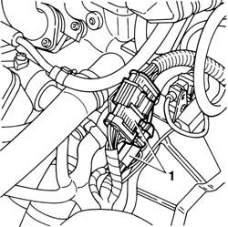
Applies to: engines: 2.5 V6; all production periods
1. Undo the bolts (1a) and remove the electrical connections mounting bracket (1b).
2. Disconnect the electrical connection from the combined sender unit for the engine coolant temperature gauge and warning light.
 | Name | Connector |
|---|---|---|
2 | Coolant temperature sender unit |
3. Disconnect the electrical connection from the engine coolant temperature sensor.
| Name | Connector |
|---|---|---|
3 | Engine temperature sensor |
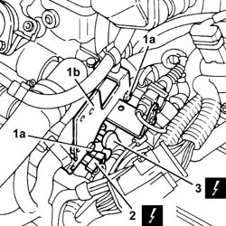
Applies to: engines: 2.5 V6; all production periods
1088D14 upper sleeve for coolant inlet to radiator - r + r
1. Disconnect the lower radiator coolant outlet hose from the thermostat.
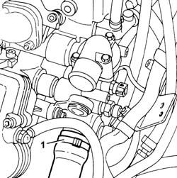
Applies to: engines: 2.5 V6; all production periods
1. Disconnect the coolant return pipe from the climate control system heater from the thermostat.
2. Disconnect the coolant supply hose to the engine oil heat exchanger from the thermostat.
3. Undo the bolts (3a) and remove the thermostat (3b).
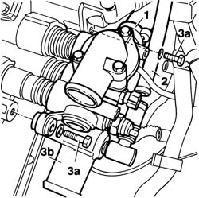
Applies to: engines: 2.5 V6; all production periods
Refitting
Removing1. Replace the O-Rings (1a), then fit the thermostat (1b) and fix it using the bolts (1c).
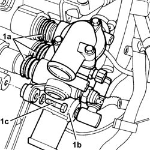
Applies to: engines: 2.5 V6; all production periods
Connect the coolant supply hose to the engine oil heat exchanger to the thermostat.
Connect the coolant return hose from the climate control system heater to the thermostat.
1088D14 upper sleeve for coolant inlet to radiator - r + r
Connect the electrical connection to the engine coolant temperature sensor.
Connect the electrical connection to the combined sender unit for the coolant temperature gauge and overheating warning light.
Fit the electrical connections mounting bracket and fix it to the thermostat using the bolts.
Fix the electrical connections to the mounting bracket.
1048A34 sleeve(s) from flow meter to air supply capacity case - r + r
Supply the engine cooling system with the recommended fluid.
 | Type | Component | Name | Qty. |
|---|---|---|---|---|
- | Fluid [l] | ENGINE COOLING CIRCUIT | Mixture 50% Paraflu11 for Alfa Romeo/distilled water | 9.2 |
Applies to: engines: 1.6 TS , 1.8 TS; all production periods
Removing
RefittingPosition the vehicle on the lift.
1048A34 sleeve(s) from flow meter to air supply capacity case - r + r
7055B54 under-engine guard - r r
1088D10 lower sleeve for coolant outlet from radiator - r + r
1. Disconnect the coolant supply hose to the heat exchanger (1a), the coolant supply hose to the heater (1b) and the coolant return hose to the tank (1c) from the thermostat.
2. Disconnect the electrical connection from the engine coolant temperature sensor.
| Name | Connector |
|---|---|---|
2 | Engine temperature sender unit |
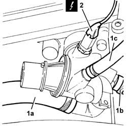
Applies to: engines: 1.6 TS , 1.8 TS; all production periods
1. Undo the bolts and remove the thermostat complete with gasket.
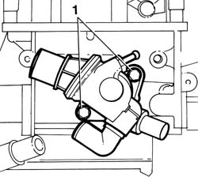
Applies to: engines: 1.6 TS , 1.8 TS; all production periods
Refitting
RemovingThoroughly clean the contact surfaces between the cylinder head and the thermostat.
Fit the thermostat, complete with gasket, and fix it tightening the bolts to the recommended torque.
 | Fastening | Component | Ø | Value (daNm) |
|---|---|---|---|---|
- | Bolt | THERMOSTAT | M8 x 25 | 1.7 - 2.1 |
Connect the electrical connection to the engine coolant temperature sensor.
Connect the hoses to the thermostat.
1088D10 lower sleeve for coolant outlet from radiator - r + r
7055B54 under-engine guard - r r
1048A34 sleeve(s) from flow meter to air supply capacity case - r + r
Position the vehicle on the lift.
Applies to: engines: 2.0 JTS, 2.0 JTS; all production periods
Removing
RefittingPosition the vehicle on the ramp.
Ensure that the ignition key is in OFF position, then disconnect the negative battery terminal.
| Name | Connector |
|---|---|---|
- | Battery |
Proceed with removal 1016A40 ignition coil cover on cylinder head- r+r .
Proceed with removal 5530B10 battery - r+r .
1. Loosen the band and disconnect the oil vapour recirculation pipe from the cam cover.
2. Loosen the band and disconnect the vacuum pipe from the corrugated sleeve.
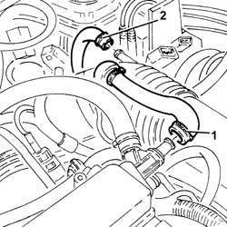
Applies to: engines: 2.0 JTS, 2.0 JTS; all production periods
1. Loosen bands (1a) and remove the rigid pipe (1b) with corrugated air intake sleeve (1c) from the air filter to the throttle body.
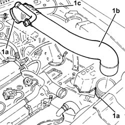
Applies to: engines: 2.0 JTS, 2.0 JTS; all production periods
Proceed with removal 7055B54 under-engine guard - r r .
1. Disconnect the lower coolant outlet hose from the radiator and drain the engine coolant.
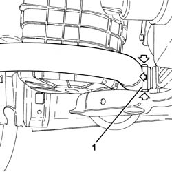
Applies to: engines: 2.0 JTS, 2.0 JTS; all production periods
1. Disconnect the electrical connection from the engine coolant temperature sensor.
| Name | Connector |
|---|---|---|
1 | Engine temperature sender unit |
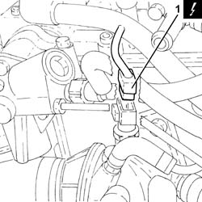
Applies to: engines: 2.0 JTS, 2.0 JTS; all production periods
1. Loosen the band and disconnect the coolant return pipe from the engine coolant reservoir, thermostat side.
2. Loosen band and disconnect the upper coolant inlet hose to the radiator thermostat side.
3. Loosen the band and disconnect the coolant return pipe to the climate control heater, thermostat side.
4. Loosen the band and disconnect the engine oil heat exchanger flexible coolant supply pipe, rigid pipe side.
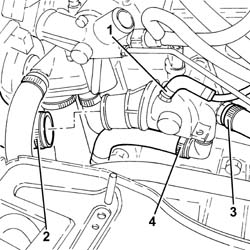
Applies to: engines: 2.0 JTS, 2.0 JTS; all production periods
1. Undo the bolts (1a) and remove the thermostat (1b), complete with engine coolant temperature sensor (1c) and O-Ring (1d).
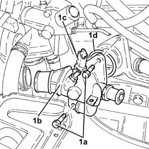
Applies to: engines: 2.0 JTS, 2.0 JTS; all production periods
Refitting
Removing1. Place the thermostat (1a), complete with engine coolant temperature sensor (1b) and O-Ring (1c) back in its housing and secure it by tightening the bolts (1d) to the recommended torque.
| Fastening | Component | Ø | Value (daNm) |
|---|---|---|---|---|
1d | Bolt | THERMOSTAT | M8 | (Cylinder head side) 2.3 ÷ 2.8 |
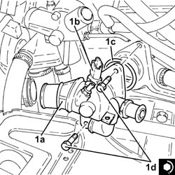
Applies to: engines: 2.0 JTS, 2.0 JTS; all production periods
Connect the coolant supply pipe to the engine oil heat exchanger, thermostat side, and tighten the band.
Connect the engine coolant return pipe from the climate control system heater, thermostat side, and tighten the band.
Connect the upper coolant inlet hose to the radiator, thermostat side, and tighten the band.
Connect the engine coolant return pipe to the supply reservoir, thermostat side and tighten the band.
Connect the electrical connection to the engine coolant temperature sensor.
Connect the rapid attachment for the bottom coolant outlet hose from the radiator.
Proceed with refitting 7055B54 under-engine guard - r r .
Place the rigid air supply pipe with corrugated air intake sleeve from the filter to the throttle body back in its housing and secure it using the bands.
Connect the vacuum pipe to the corrugated hose and tighten the band.
Connect the oil vapour recirculation pipe to the tappet cover and secure with a band.
Proceed with refitting 5530B10 battery - r+r .
Proceed with refitting 1016A40 ignition coil cover on cylinder head- r+r .
Connect the negative (-) battery terminal.
Refill the engine cooling system with coolant 0010T20 coolant change .
Remove the car from the ramps.
Applies to: engines: 1.9 JTD 8v , 2.4 JTD 10v; all production periods
Removing
RefittingDisconnect the lower coolant outlet hose from the radiator and drain the engine coolant.
1. Disconnect the electrical connection from the engine temperature sensor.
| Name | Connector |
|---|---|---|
1 | Engine temperature sensor |
2. Disconnect the electrical connection from the engine coolant temperature sender unit.
| Name | Connector |
|---|---|---|
2 | Coolant temperature sender unit |
3. Disconnect the supply pipe to the engine coolant tank from the thermostat.
4. Disconnect the supply pipe to the climate control system heater from the thermostat.
5. Disconnect the coolant return pipe to the pump from the thermostat.
6. Disconnect the upper coolant supply hose to the radiator from the thermostat.
7. Disconnect the supply pipe to the water-oil heat exchanger from the thermostat.
8. Undo the bolts (8) and remove the thermostat (8b) complete with gasket.
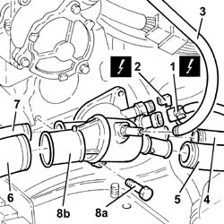
Applies to: engines: 1.9 JTD 8v , 2.4 JTD 10v; all production periods
Refitting
RemovingFit the thermostat, complete with gasket, and fix it tightening the bolts to the recommended torque.
| Fastening | Component | Ø | Value (daNm) |
|---|---|---|---|---|
- | Bolt | THERMOSTAT | M8 | 2.1 - 2.6 |
Connect the supply pipe to the water-oil heat exchanger to the thermostat.
Connect the upper coolant supply pipe to the radiator to the thermostat.
Connect the coolant return pipe to the pump to the thermostat.
Connect the supply pipe to the climate control system heater to the thermostat.
Connect the supply pipe to the engine coolant tank to the thermostat.
Connect the electrical connection to the engine coolant temperature sender unit.
Connect the electrical connection to the engine temperature senor.
Connect the lower coolant outlet hose to the radiator.
Applies to: engines: 1.9 JTD 8v ; all production periods
Refill the engine cooling system with coolant.
| Type | Component | Name | Qty. |
|---|---|---|---|---|
- | Fluid | ENGINE COOLING CIRCUIT | Mixture 50% Paraflu11 for Alfa Romeo/distilled water | 6.1 |
Applies to: engines: 2.4 JTD 10v; all production periods
Refill the engine cooling system with coolant.
| Type | Component | Name | Qty. |
|---|---|---|---|---|
- | Fluid [l] | ENGINE COOLING CIRCUIT | Mixture 50% Paraflu11 for Alfa Romeo/distilled water | 6.8 |
Applies to: engines: 1.9 JTD 8v , 2.4 JTD 10v; all production periods
Applies to: engines: 1.9 JTD 8v ; all production periods; only with equipment: Euro 3
Removing
RefittingPosition the vehicle on the ramp.
Proceed with removal 5530B10 battery - r+r .
Proceed with removal 7055B54 under-engine guard - r r .
1. Undo the lower bolt securing the exhaust gas recirculation pipe to the exhaust manifold.
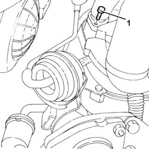
Applies to: engines: 1.9 JTD 8v ; all production periods; only with equipment: Euro 3
1. Undo the upper bolt securing the exhaust gas recirculation pipe to the exhaust manifold.
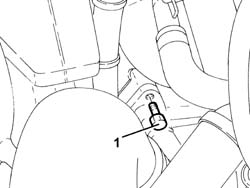
Applies to: engines: 1.9 JTD 8v ; all production periods; only with equipment: Euro 3
1. Disconnect the electrical connection from the engine coolant temperature sensor.
| Name | Connector |
|---|---|---|
1 | Engine temperature sender unit |
2. Disconnect the upper coolant inlet hose to the radiator from the thermostat and drain the coolant.
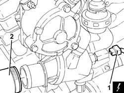
Applies to: engines: 1.9 JTD 8v ; all production periods; only with equipment: Euro 3
1. Undo the bolts securing the exhaust gas supply pipe to the E.G.R. valve.
2. Loosen the bolts securing the starter motor and remove the wiring and piping bracket after releasing the wires and pipes from the bands on the bracket.
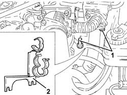
Applies to: engines: 1.9 JTD 8v ; all production periods; only with equipment: Euro 3
1. Disconnect, from the thermostat, the coolant supply pipe to the climate control system heater.
2. Disconnect the outlet pipe from the climate control system heater (2a) from the thermostat T-connector and the delivery pipe to the rigid fluid intake pipe to the coolant pump (2b).
3. Disconnect the coolant return pipe to the coolant reservoir from the thermostat.
4. Disconnect the coolant intake pipe (4a) and the coolant outlet pipe (4b) from the EGR exhaust gas heat exchanger.
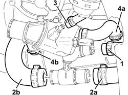
Applies to: engines: 1.9 JTD 8v ; all production periods; only with equipment: Euro 3
1. Undo the nut securing the EGR exhaust gas heat exchanger to the thermostat fastening.
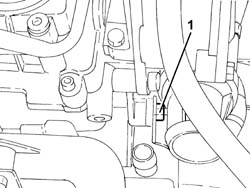
Applies to: engines: 1.9 JTD 8v ; all production periods; only with equipment: Euro 3
1. Undo bolt (1a) and nut (1b) securing the EGR exhaust gas heat exchanger to the cylinder head.
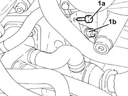
Applies to: engines: 1.9 JTD 8v ; all production periods; only with equipment: Euro 3
Move back the EGR exhaust gas heat exchanger as far as necessary.
1. Undo the bolts (1a) and remove thermostat (1b) complete with o-ring.
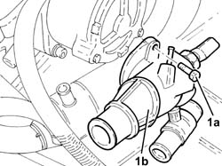
Applies to: engines: 1.9 JTD 8v ; all production periods; only with equipment: Euro 3
Refitting
RemovingPlace the thermostat back in its housing and fix it tightening the bolts to the recommended torque.
| Fastening | Component | Ø | Value (daNm) |
|---|---|---|---|---|
- | Bolt | THERMOSTAT | M8 | (Cylinder head side) 2.1 ÷ 2.6 |
Tighten the bolt and nuts securing the EGR exhaust gas heat exchanger to the cylinder head.
Tighten the nut securing the EGR valve exhaust gas heat exchanger to the thermostat fastening
Connect the coolant inlet and outlet pipes to the EGR exhaust gas heat exchanger.
Connect the coolant return pipe to the coolant reservoir to the thermostat.
Connect the outlet pipe from the climate control system heater and the delivery pipe to the rigid inlet pipe to the coolant pump to the thermostat T-connector.
Connect the coolant supply pipe to the climate control system heater to the thermostat.
Refit the wiring and piping bracket and secure by tightening the starter motor bolts to the specified torque.
| Fastening | Component | Ø | Value (daNm) |
|---|---|---|---|---|
- | Bolt | STARTER MOTOR | M8 | (Gearbox side) 2.4 ÷ 3.0 |
Secure the electrical wiring and pipes using the bands on the bracket.
Tighten the bolts securing the exhaust gas recirculating pipe to the EGR valve.
Connect the upper coolant inlet hose to the radiator to the thermostat.
Connect the electrical connection to the engine coolant temperature sensor.
Tighten the upper bolt securing the exhaust gas recirculation pipe to the exhaust manifold
Tighten the lower bolt securing the exhaust gas recirculation pipe to the exhaust manifold
Proceed with refitting 7055B54 under-engine guard - r r .
Proceed with refitting 5530B10 battery - r+r .
Remove the car from the ramps.
Applies to: engines: 2.4 JTD 10v; all production periods; only with equipment: Euro 3
Removing
RefittingPosition the vehicle on the ramp.
Proceed with removal 1016A10 sound-proofing cover - r + r .
1. Loosen the band (1a) and disconnect the air delivery hose from the heat exchanger to the intake manifold (1b), throttle body side and move it aside.
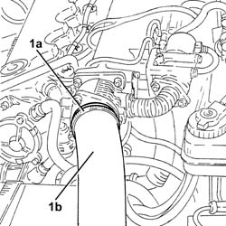
Applies to: engines: 2.4 JTD 10v; all production periods; only with equipment: Euro 3
Proceed with removal 5530B10 battery - r+r .
Proceed with removal 7055B54 under-engine guard - r r .
Proceed with removal 1072C44 exhaust manifold heat shield on bulkhead - r+r .
1. Disconnect the electrical connection from the engine coolant temperature sensor and release the electrical wiring from the band.
| Name | Connector |
|---|---|---|
1 | Engine temperature sender unit |
2. Disconnect the upper coolant inlet hose to the radiator, thermostat side.
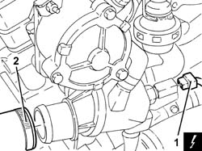
Applies to: engines: 2.4 JTD 10v; all production periods; only with equipment: Euro 3
1. Disconnect the coolant supply pipe to the air conditioning system heater, thermostat side.
2. Disconnect the climate control system heater outlet pipe, thermostat side from the thermostat T connector.
3. Disconnect the coolant return pipe to the engine coolant reservoir, thermostat side.
4. Disconnect the coolant intake pipe (4a) and the coolant outlet pipe (4b) from the EGR water/exhaust gas heat exchanger.
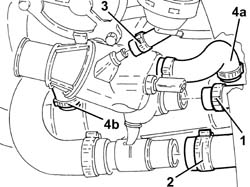
Applies to: engines: 2.4 JTD 10v; all production periods; only with equipment: Euro 3
1. Disconnect the pipe from the thermostat T connector to the water pump rigid coolant inlet pipe, rigid pipe side.
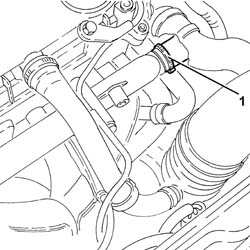
Applies to: engines: 2.4 JTD 10v; all production periods; only with equipment: Euro 3
1. Undo the bolts fixing the E.G.R. pipe, exhaust manifold side.
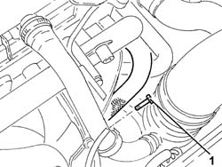
Applies to: engines: 2.4 JTD 10v; all production periods; only with equipment: Euro 3
1. Undo the bolts fixing the E.G.R. pipe, E.G.R. system solenoid valve side.
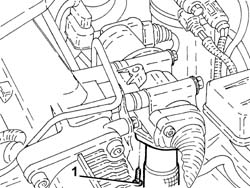
Applies to: engines: 2.4 JTD 10v; all production periods; only with equipment: Euro 3
1. Undo the bolt fixing the vacuum pipe mounting bracket.
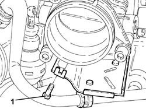
Applies to: engines: 2.4 JTD 10v; all production periods; only with equipment: Euro 3
1. Tighten the bolts fixing the water/exhaust gas heat exchanger for the E.G.R. system to the air chamber.
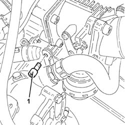
Applies to: engines: 2.4 JTD 10v; all production periods; only with equipment: Euro 3
1. Undo the bolts fixing the water/exhaust gas heat exchanger for the E.G.R. system to the thermostat fastening pin.
Applies to: engines: 2.4 JTD 10v; all production periods; only with equipment: Euro 3
1. Undo the bolts (1a) and remove thermostat (1b) complete with o-ring.
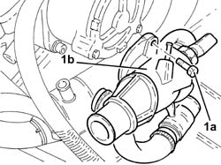
Applies to: engines: 2.4 JTD 10v; all production periods; only with equipment: Euro 3
Refitting
RemovingPlace the thermostat complete with O-ring back in its housing and fix it tightening the bolts to the recommended torque.
| Fastening | Component | Ø | Value (daNm) |
|---|---|---|---|---|
- | Bolt | THERMOSTAT | M8 | (Cylinder head side) 2.1- 2.6 |
Tighten the nut securing the EGR system water/exhaust valve heat exchanger to the thermostat fastening pin.
Tighten the bolts fixing the water/exhaust gas heat exchanger for the E.G.R. system to the air chamber.
Tighten the bolt securing the vacuum pipe mounting brackets.
Tighten the bolts fixing the E.G.R. pipe, E.G.R. system solenoid valve side.
Tighten the bolts fixing the E.G.R. pipe, exhaust manifold side.
Connect the pipe from the thermostat T connector to the water pump rigid coolant inlet pipe, rigid pipe side.
Connect the engine coolant inlet pipe and the engine coolant outlet pipe to the E.G.R. water/exhaust gas heat exchanger.
Connect the coolant return pipe to the engine coolant reservoir, thermostat side.
Connect the climate control system heater outlet pipe, thermostat side to the thermostat T connector.
Connect the engine coolant supply pipe from the climate control system heater, thermostat side.
Connect the upper coolant inlet hose to the radiator, thermostat side.
Connect the electrical connection to the engine coolant temperature sensor and fasten the electrical wiring.
Proceed with refitting 1072C44 exhaust manifold heat shield on bulkhead - r+r .
Proceed with refitting 7055B54 under-engine guard - r r .
Proceed with refitting 5530B10 battery - r+r .
Connect the air supply hose from the heat exchanger to the inlet manifold, throttle body side, and tighten the band.
Proceed with refitting 1016A10 sound-proofing cover - r + r .
Supply the engine cooling system with the recommended fluid.
| Type | Component | Name | Qty. |
|---|---|---|---|---|
- | Fluid [l] | ENGINE COOLING CIRCUIT | Mixture 50% Paraflu11 for Alfa Romeo/distilled water | 6.8 |
Remove the car from the ramps.
Applies to: engines: 1.9 JTD 16v; all production periods
Removing
RefittingPosition the vehicle on the ramp.
Proceed with removal 1016A10 sound-proofing cover - r + r .
Proceed with removal 5530B10 battery - r+r .
Proceed with removal 5530B52 Battery DRIP TRAY/SUPPORT - R.R. .
Proceed with removal 7055B54 under-engine guard - r r .
1. Loosen the band and disconnect the coolant return pipe from the engine coolant reservoir, thermostat side.
2. Loosen the band and disconnect the upper coolant inlet hose to the radiator thermostat side.
3. Loosen the band and disconnect the coolant return pipe to the climate control heater, thermostat side.
4. Loosen the band and disconnect the coolant supply pipe to the water/exhaust gas heat exchanger for the E.G.R. system, thermostat side.
5. Disconnect the electrical connection from the engine coolant temperature sensor.
| Name | Connector |
|---|---|---|
5 | Engine temperature sender unit |
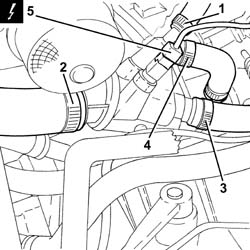
Applies to: engines: 1.9 JTD 16v; all production periods
1. Undo the bolts (1a) and remove the thermostat (1b) complete with O-ring (1c).
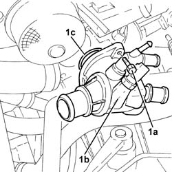
Applies to: engines: 1.9 JTD 16v; all production periods
Refitting
Removing1. Refit thermostat (1a), complete with O-ring (1b) and secure by tightening the bolts (1c) to the recommended torque.
| Fastening | Component | Ø | Value (daNm) |
|---|---|---|---|---|
1c | - | - | - | - |
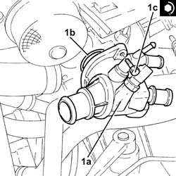
Applies to: engines: 1.9 JTD 16v; all production periods
Connect the electrical connection to the engine coolant temperature sensor.
Connect the engine coolant supply pipe to the EGR system water/exhaust gas heat exchanger, thermostat side and tighten the band.
Connect the engine coolant return pipe from the climate control system heater, thermostat side, and tighten the band.
Connect the upper coolant inlet hose to the radiator, thermostat side, and tighten the band.
Connect the engine coolant return pipe to the supply reservoir, thermostat side and tighten the band.
Proceed with refitting 7055B54 under-engine guard - r r .
Proceed with refitting 5530B52 Battery DRIP TRAY/SUPPORT - R.R. .
Proceed with refitting 5530B10 battery - r+r .
Refill the engine cooling system with coolant 0010T20 coolant change .
Proceed with refitting 1016A10 sound-proofing cover - r + r .
Remove the car from the ramps.
Applies to: engines: 2.4 JTD 20v; all production periods
Removing
RefittingPosition the vehicle on the ramp.
Proceed with removal 1016A10 sound-proofing cover - r + r .
Proceed with removal 5530B10 battery - r+r .
Proceed with removal 7055B54 under-engine guard - r r .
1. Loosen the band and disconnect the coolant return pipe from the engine coolant reservoir, thermostat side.
2. Loosen the band and disconnect the upper coolant inlet hose to the radiator, thermostat side.
3. Loosen the band and disconnect the coolant return pipe to the climate control heater, thermostat side.
4. Loosen the band and disconnect the coolant supply pipe to the water/exhaust gas heat exchanger for the E.G.R. system, thermostat side.
5. Disconnect the electrical connection from the engine coolant temperature sensor.
| Name | Connector |
|---|---|---|
5 | Engine temperature sender unit |
6. Release the coolant return pipe from the heater to the band.
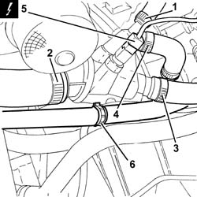
Applies to: engines: 2.4 JTD 20v; all production periods
1. Undo the bolts (1a) and remove the thermostat (1b) complete with O-Ring (1c).
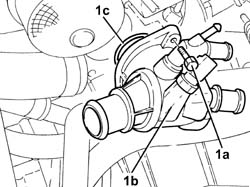
Applies to: engines: 2.4 JTD 20v; all production periods
Refitting
Removing1. Refit thermostat (1a), complete with O-ring (1b) and secure by tightening the bolts (1c) to the recommended torque.
| Fastening | Component | Ø | Value (daNm) |
|---|---|---|---|---|
1c | - | - | - | - |
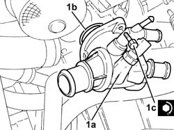
Applies to: engines: 2.4 JTD 20v; all production periods
Fix the coolant return pipe from the heater to the band.
Connect the electrical connection to the engine coolant temperature sensor.
Connect the engine coolant supply pipe to the EGR system water/exhaust gas heat exchanger, thermostat side and tighten the band.
Connect the engine coolant return pipe from the climate control system heater, thermostat side, and tighten the band.
Connect the upper coolant inlet hose to the radiator, thermostat side, and tighten the band.
Connect the engine coolant return pipe to the supply reservoir, thermostat side and tighten the band.
Proceed with refitting 7055B54 under-engine guard - r r .
Proceed with refitting 5530B10 battery - r+r .
Refill the engine cooling system with coolant 0010T20 coolant change .
Proceed with refitting 1016A10 sound-proofing cover - r + r .
Remove the car from the ramps.
Topics linked from this page (14)
- 0010T20 coolant change
- 1016A10 sound-proofing cover - r + r
- 1016A40 ignition coil cover on cylinder head- r+r
- 1048A34 sleeve(s) from flow meter to air supply capacity case - r + r
- 1072C44 exhaust manifold heat shield on bulkhead - r+r
- 1088D10 lower sleeve for coolant outlet from radiator - r + r
- 1088D14 upper sleeve for coolant inlet to radiator - r + r
- 5530B10 battery - r+r
- 5530B52 Battery DRIP TRAY/SUPPORT - R.R.
- 7055B54 under-engine guard - r r
- A1B Battery ( BATTERY NEGATIVE )
- K35 Coolant temperature sender unit
- K36 Engine temperature sender unit
- K45 Engine temperature sensor